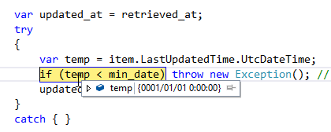

WebMatrix：フィードを読み込んでデータベースへつっこむときに System.Data.SqlServerCe.SqlCeException が発生する。
公開日：
だいぶ悩んで、Visual Studio まで立ち上げていろいろデバッグしていたのだけど、原因は簡単だった。
データ型datetime
300 分の 1 秒、つまり 3.33 ミリ秒の精度で、1753 年 1 月 1 日から 9999 年 12 月 31 日までの日付と時刻のデータを格納するデータ型です。値は .000、.003、または .007 ミリ秒の単位になるように丸められます。
2 つの 4 バイト整数として格納されます。最初の 4 バイトは、base date である 1900 年 1 月 1 日からの日数、またはこの日までの日数を格納します。基準日とは、システムが参照する日付です。datetime 型の値には、1753 年 1 月 1 日より前の日付を使用できません。もう一方の 4 バイトは、午前 0 時から数えた時間をミリ秒単位で格納します。秒の有効範囲は 0 から 59 までです。
一方、C# の default(DateTime) は 0001/01/01 0:00:00。つまり、SyndicationFeed オブジェクトの LastUpdateTime プロパティあたりにちゃんと値がセットされてなくて（そういうフィードを配信しているサイトは割とある）、default(DateTime) を返してくるとき、それをそのまま SQL CE データベースに格納しようとするとエラーになる。

SQL CE の datetime 型を扱う場合は、事前に値の範囲に収まるかチェックして、ダメな場合はハネておかないといけないんだね。
var min_date = new DateTime(1753, 1, 1); // ほんとは readonly でどこかに var updated_at = item.LastUpdatedTime.UtcDateTime < min_date ? new DateTimeOffset(DateTime.Now).UtcDateTime : item.LastUpdatedTime.UtcDateTime;// Database.Execute();
教訓
ちゃんとマニュアルは読もう。